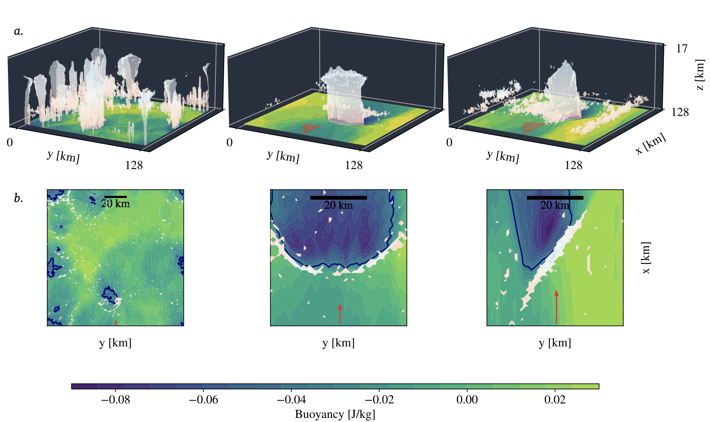

Abstract
We simulate several cases of squall lines using the Cloud-Resolving Model (CRM) Sys- tem for Atmospheric Modeling, or SAM (Khairoutdinov & Randall, 2003). This model is based on a non-hydrostatic and anelastic formulation of atmospheric flows. It has the ability to cover a wide range of scales, from deep convective kilometric scale to mesoscale organization O(100s km), and is thus adapted to the study of mesoscale systems such as squall lines. The prognostic thermodynamic variables of the model include total non- precipitating water (vapor, cloud water, cloud ice) and total precipitating water (rain, snow, graupel). The mixing ratios of cloud water, cloud ice, rain, graupel, and snow is diagnosed from the prognostic variables using a temperature-dependent partition between liquid and ice phases. The frozen moist static energy, which is the sum of the liquid/ice water static energy and the total condensate amount times the latent heat of vaporiza- tion, is conserved during moist adiabatic processes in the model, including the freezing and melting of precipitation. The model is run to radiative-convective equilibrium, and once equilibrium is reached (in about 30 days) the organization of squall lines is analyzed, from day 30 to 35 with hourly outputs.
All simulations are three-dimensional on a square, doubly periodic horizontal domain, with horizontal resolution 1 km and domain size 128 km in x and y directions. The vertical grid has 64 levels (capped at 27 km with a rigid lid), with the first level at 37.5 m and grid spacing gradually increasing from 80 m near the surface to 400 m above 6 km, and a variable time step (10 s or less to satisfy the Courant–Friedrichs–Lewy condition). The surface fluxes are computed using Monin–Obukhov similarity.
